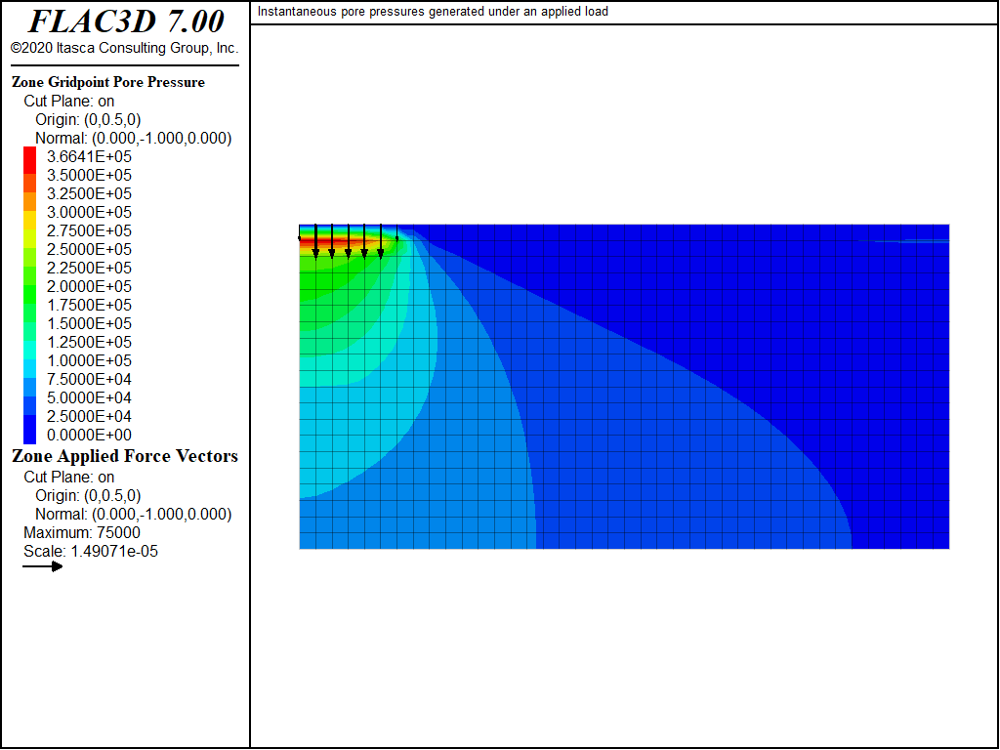
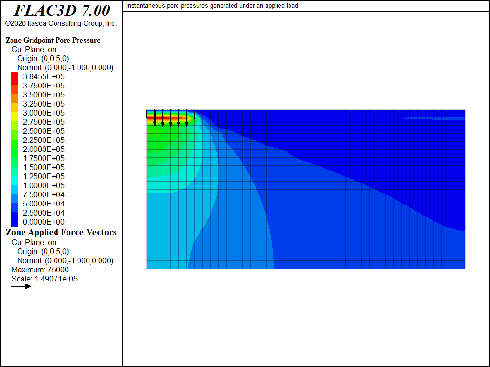
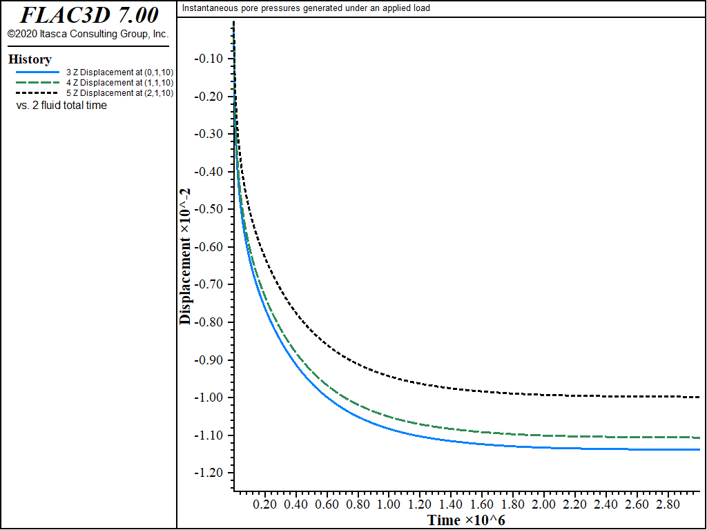
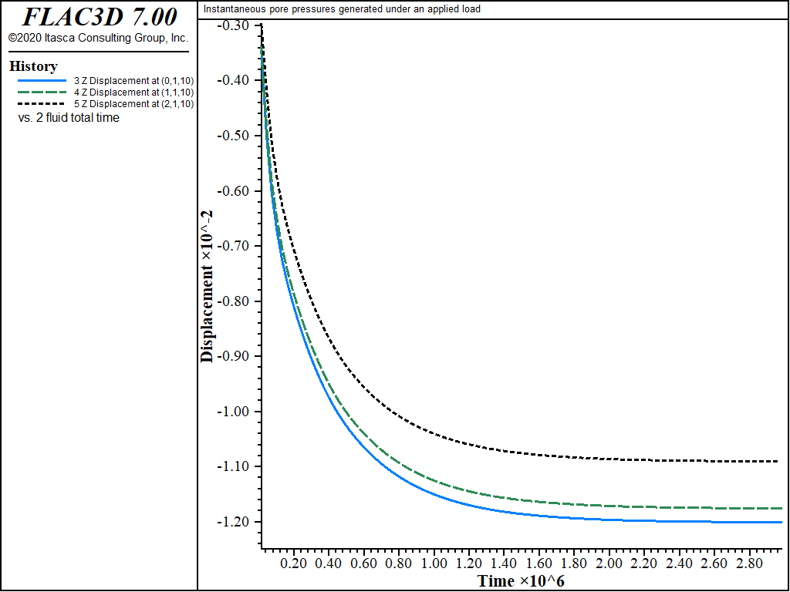
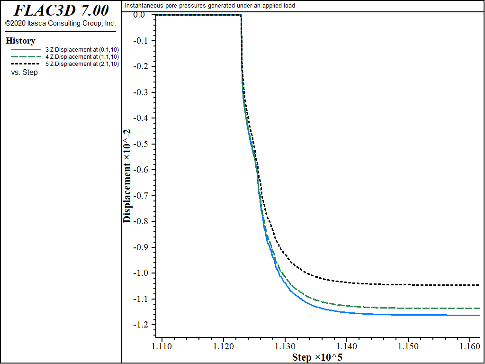
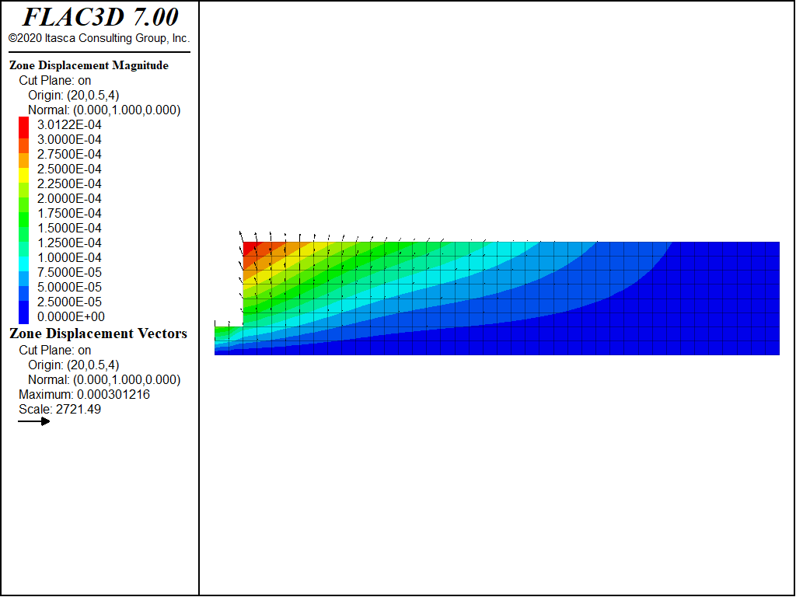
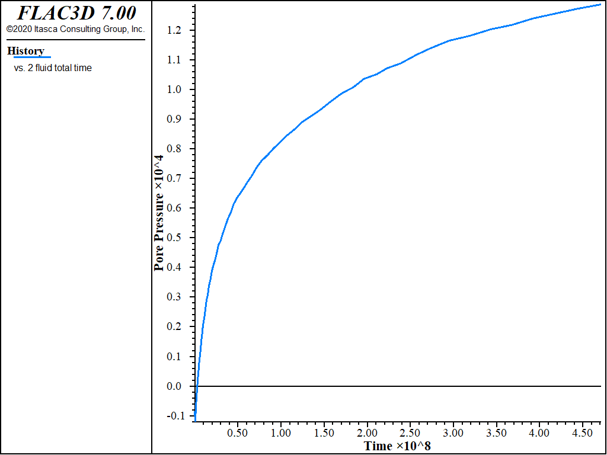
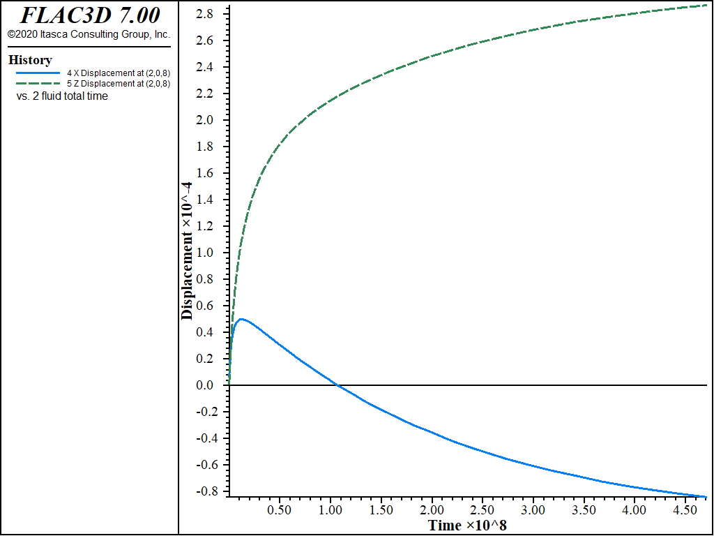

求解纯渗流与耦合渗流问题
FLAC3D 既能进行纯渗流分析，也能进行流体与力学耦合分析。耦合分析可使用 FLAC3D 中任一种内置力学模型。
可采用多种建模策略处理耦合过程。其中一种假设赋予网格的孔隙压力保持不变；这种方法无需为渗流计算预留额外内存。与该模式有关的命令见未配置流体渗流的网格（Grid Not Configured for Fluid Flow）。涉及流体流动的建模策略要求发出 配置流体计算模式（model configure fluid） 命令，将网格配置为流体分析，并对所有可能发生流体流动的网格单元发出 配置流体计算模式（model configure fluid） 命令。注意，在耦合分析中，力学上被置空的网格单元，其流体渗流模型不会自动置空。对于流体置空网格单元，必须发出 单元流体本构模型指定空（zone fluid cmodel assign null） 命令。与 配置流体计算模式（model configure fluid） 模式有关的命令见已配置流体渗流的网格（Grid Configured for Fluid Flow）。
以下各节将说明耦合分析的不同建模策略，较复杂的策略需要更多计算机内存和计算时间。一般而言，在能够再现当前问题中重要物理过程的前提下，应选用尽可能简单的选项。根据时间尺度选择方法的建议准则见完全耦合分析建模方法的选择（Selection of a Modeling Approach for a Fully Coupled Analysis）；各种建模策略见固定孔隙压力（Fixed Pore Pressure）至渗流与力学耦合计算（Coupled Flow and Mechanical Calculations）。
时间尺度
规划使用 FLAC3D 进行流体渗流或耦合渗流计算的模拟时，估算各个相关过程的时间尺度通常很有帮助。了解问题的时间尺度和扩散系数，有助于评估最大网格范围、最小网格单元尺寸、时间步大小以及总体可行性。此外，如果各过程的时间尺度差异很大，便可能采用简化的非耦合方法分析问题。（完全耦合分析中采用这种方法的详细讨论见完全耦合分析建模方法的选择（Selection of a Modeling Approach for a Fully Coupled Analysis）。）
可通过下列特征时间的定义来理解时间尺度。这些定义源于量纲分析，并出现在连续源解析解的表达式中。可用它们估算 FLAC3D 分析的近似时间尺度。
力学过程的特征时间
其中，\(K_u\) 为不排水体积模量，\(G\) 为剪切模量，\(\rho\) 为质量密度，\(L_c\) 为特征长度（即介质的平均尺寸）。
扩散过程的特征时间
其中，\(L_c\) 为特征长度（即穿过介质的渗流路径的平均长度），\(c\) 为扩散系数，定义为流动系数 \(k\) 除以储水系数 \(S\)：
根据起控制作用的过程，FLAC3D 中适用的储水系数有以下不同形式：
- 流体储水
- 潜水储水
- 弹性储水
其中，\(M\) 为 Biot 模量，\(\alpha\) 为 Biot 系数（对于不可压缩颗粒，\(M\) = \(K_f/n\) 且 \(\alpha\) = 1），\(K\) 为排水体积模量，\(G\) 为剪切模量，\(\rho_w\) 为流体密度，\(g\) 为重力，\(L_p\) 为特征储水长度（即介质中可用于储存流体的平均高度）。
对于饱和纯渗流计算（刚性材料），\(S\) 为流体储水，\(c\) 为流体扩散系数（式 (3) 和 (4)）：
对于非饱和渗流计算，\(S\) 为潜水储水，扩散系数（由式 (3) 和 (5) 得到）为
对于使用 FLAC3D 进行的饱和变形与扩散耦合分析，\(S\) 为弹性储水，\(c\) 为真实或广义固结系数，由式 (3) 和 (6) 定义为
根据上述定义，有一些值得注意的性质：
由于 FLAC3D 的显式时间步对应于信息从一个网格点传播到下一个网格点所需的最短时间，因此可在特征时间公式中以最小网格单元尺寸作为 \(L_c\)，估算时间步大小。需要注意，即使在耦合模拟中，FLAC3D 的显式流体渗流时间步也使用流体扩散系数（式 (7)）计算。因此，可将式 (7) 代入式 (2)，并以最小网格单元尺寸 \(L_z\) 作为 \(L_c\)，利用所得公式估算时间步大小：
(10)\[\Delta t = \min \left( {{L_z^2 } \over{k M}} \right)\]在饱和流体渗流问题中，减小体积模量（即 \(M\) 或 \(K_f\)）不仅会增大时间步，也会延长达到稳态所需的时间，因此总步数 \(n_t\) 不变。利用式 (2)、(7) 和 (10)，取模型特征时间 \(t_c\) 与临界时间步 \(\Delta t\) 之比，可估算该步数，得到
(11)\[n_t = {\left( {L_c \over L_z} \right)}^2\]其中，\(L_c\) 和 \(L_z\) 分别为模型和最小网格单元的特征长度。
在非饱和流体渗流问题中，可通过调整流体模量（\(M\) 或 \(K_f\)）加快向稳态的收敛。应注意，不能过度减小 \(M\)（或 \(K_f\)）而导致数值不稳定。要求流体储水（用于计算临界时间步）始终小于一个网格单元高度 \(L_z\) 内的潜水储水，即可推导出稳定条件：
(12)\[M > a L_z \rho_w g/n\]其中，\(a\) 为调整系数，取值为 0.3。
由式 (2) 可知，为避免扩散问题中的任何边界影响，模型的特征长度 \(L_c\) 必须大于尺寸 \(\sqrt{c t_s}\)，其中 \(t_s\) 为最大模拟时间，\(c\) 为起控制作用的扩散系数。反之，最小模拟时间受关系式 \(t_{min} > L_z^2/c\) 控制。
在耦合渗流问题中，真实扩散系数由刚度比 \(R_k\)（即流体刚度与骨架刚度之比）控制：
(13)\[R_k = {{\alpha^2 M} \over {K + {4 \over 3} G}}\]采用此处对 \(R_k\) 的定义，式 (14) 可写成两种形式：
(14)\[c = k M {1 \over{1 + R_k}}\]以及
(15)\[c = {k \over{\alpha^2}} \left( K + {4 \over 3} G \right) {1 \over{1 + {1 \over R_k}}}\]若 \(R_k\) 较小（相对于 1），式 (9) 表明，FLAC3D 的标准显式时间步（见式 (10)）可视为能够代表系统的扩散特性。例如，可使用式 (11) 对饱和条件下达到完全固结所需步数进行数量级估算。
若 \(R_k\) 较大（即 \(M\) 相对于 \((K + 4G/3)/\alpha^2\)（或 \(K_f >>> (K + 4G/3)n\)）较大），FLAC3D 的显式时间步会很小，而问题的扩散系数由骨架控制（见式 (10) 和 (14)）。可以减小 \(M\)（或 \(K_f\)），以增大时间步并更快计算到稳态。式 (14) 表明，若减小 \(M\)（或 \(K_f\)）使 \(R_k\) = 20，则扩散系数与 \(M\)（或 \(K_f\)）为无穷大时的扩散系数之差应在 5% 以内（示例见一维固结（1D Consolidation））。时间尺度预计也能保持相同精度。注意，无论何种情况，\(K_f\) 都不应高于流体的物理值（水为 2 × 109 Pa）。
完全耦合分析建模方法的选择
使用 FLAC3D 进行完全耦合的准静态渗流力学分析通常耗时，甚至有时并无必要。在许多情况下，可进行一定程度的解耦，以简化分析并加快计算。以下示例说明了不同流体与力学耦合程度下 FLAC3D 建模方法的实施。以下三个主要因素有助于选择具体方法：
- 模拟时间尺度与扩散过程特征时间之比；
- 对耦合过程施加的扰动的性质（流体或力学）；以及
- 流体刚度与固体刚度之比。
可用特征时间 \(t_c^{f}\)（式 (2)）、扩散系数 \(c\)（式 (9)）以及刚度比 \(R_k\)（式 (13)）的表达式量化这些因素。下文将详细讨论这些因素，选择建模方法的建议步骤（Recommended Procedure to Select a Modeling Approach）给出了依据这些因素选择建模方法的建议流程。
时间尺度
首先考虑时间尺度因素，从扰动开始时计时。定义 \(t_s\) 为分析所需的时间尺度，\(t_c\) 为耦合扩散过程的特征时间（达到稳态时间的估算值，使用式 (2) 和式 (9) 定义）。
短期行为
若 \(t_s\) 相对于耦合扩散过程的特征时间 \(t_c\) 很短，则流体流动对模拟结果的影响很可能可以忽略，此时可使用 FLAC3D 进行不排水模拟（采用“干”或“湿”模拟均可，见无流动（No Flow）。湿模拟使用 配置流体计算模式（model configure fluid） 和 单元流体活动（zone fluid active） 关闭（off） 进行）。数值模拟不涉及实际时间（即 \(t_s <<< t_c\)），但若为流体模量（\(M\) 或 \(K_f\)）赋予真实值，孔隙压力将因体积应变而变化。基础荷载模拟（footing load simulation）是这种方法的示例。
长期行为
若 \(t_s >>> t_c\)，且在 \(t = t_s\) 时以排水行为为主，则孔隙压力场可与力学场解耦。可先采用纯流体模拟（单元流体活动（zone fluid active） 开启（on），单元力学活动（zone mechanical active） 关闭（off））确定稳态孔隙压力场（此时扩散系数不具代表性），然后令 \(K_f\) = 0，在力学模式下将模型循环计算至平衡，以确定力学场（单元力学活动（zone mechanical active） 开启（on），单元流体活动（zone fluid active） 关闭（off））。（严格而言，这种工程方法只对弹性材料有效，因为塑性材料具有路径依赖性。）
还可以用不排水或排水响应描述时间尺度。不排水的严格含义是与外界没有流体交换（其中，实验室试验中的外界是指试样外部，而数值模拟或现场条件中则指其他单元）。排水意味着与外界充分交换流体，即流体压力能够在各处消散。这两个词通常分别与短期和长期相对应，因为不排水试验通常可快速完成，而排水试验则需要较长时间使超额流体压力消散。在现场，短期意味着流体迁移量可以忽略，长期意味着压力已稳定（这需要较长时间）。
注意，在未配置流体的情况下进行模拟，或虽已配置流体但关闭流体计算时，程序不会在内部完成因施加孔隙压力变化（例如降低地下水位引起的变化）而产生的总应力调整。不过，可以监测孔隙压力增量（例如使用 FISH 函数），并在循环计算至力学平衡之前用它减小总法向应力。如果地下水位在网格内发生移动，且模拟未配置流体，还需要调整饱和与非饱和质量密度。（关于此主题的更多信息，见概念验证及特定应用的建模技术（Verification of Concepts, and Modeling Techniques for Specific Applications）。）
对耦合过程施加的扰动的性质
对完全耦合渗流力学系统施加的扰动，可能源于流体渗流边界条件或力学边界条件的变化。例如，承压含水层内流向井的非稳态渗流由井处孔隙压力的变化驱动。修筑公路路堤引起的饱和地基固结则由路堤自重施加的力学荷载控制。若扰动源于孔隙压力变化，流体渗流过程很可能可以与力学过程解耦。下文将进一步详述，并在浅层承压含水层中流向井的非稳态渗流（Transient Fluid Flow to a Well in a Shallow Confined Aquifer）中说明。若扰动由力学作用驱动，解耦程度则取决于下文所述的流体与固体刚度比。
刚度比
相对刚度 \(R_k\)（见式 (13)）对用于求解渗流力学问题的建模方法有重要影响：
相对刚硬的骨架（\(R_k <<< 1\)）
若骨架很刚硬（或流体很容易压缩），且 \(R_k\) 很小，则孔隙压力扩散方程可以解耦，因为扩散系数由流体控制（Detournay and Cheng 1993）。建模技术将取决于驱动机制（流体或力学扰动）：
- 在力学作用驱动的模拟中，可假设孔隙压力保持不变。在弹性模拟中，固体表现得如同没有流体一样；在塑性分析中，孔隙压力的存在可能影响破坏。这种建模方法用于边坡稳定性分析（见固定孔隙压力（Fixed Pore Pressure））。
- 在孔隙压力驱动的弹性模拟中（例如抽取流体引起的沉降），体积应变不会显著影响孔隙压力场，因此可独立进行渗流计算（单元流体活动（
zone fluid active） 开启（on），单元力学活动（zone mechanical active） 关闭（off））。（此时，扩散系数是准确的，因为当 \(R_k <<< 1\) 时，式 (9) 中的广义固结系数与式 (7) 中的流体扩散系数相当。）通常，孔隙压力变化会影响应变，可随后在力学模式下将模型循环计算至平衡来研究这种影响（单元力学活动（zone mechanical active） 开启（on），单元流体活动（zone fluid active） 关闭（off））。在力学循环计算期间，必须将流体模量（\(M\) 或 \(K_f\)）设为零，以防产生额外的孔隙压力。
相对柔软的骨架（\(R_k >>> 1\)）
若骨架很柔软（或流体不可压缩），且 \(R_k\) 很大，则系统是耦合的，其扩散系数由骨架控制。建模方法同样取决于驱动机制。
- 在力学作用驱动的模拟中，计算可能耗时。如时间尺度（Time Scale）的注 5 所述，可以减小 \(M\)（或 \(K_f\)），使 \(R_k\) = 20，而不显著影响响应。
- 对于大多数实际的孔隙压力驱动系统，经验表明孔隙压力场与力学场之间的耦合较弱。若介质为弹性，可先在纯渗流模式下（单元流体活动（
zone fluid active） 开启（on），单元力学活动（zone mechanical active） 关闭（off））进行渗流计算，再在纯力学模式下（单元力学活动（zone mechanical active） 开启（on），单元流体活动（zone fluid active） 关闭（off），并将流体模量设为零）进行数值模拟，使模型达到平衡。需要注意，为保持系统的真实扩散系数（从而保持其特征时间尺度），在渗流计算期间，必须将流体模量 \(M\)（或 \(K_f\)）调整为
或
（见式 (9)），而在力学计算期间将其设为零，以防体积应变引起进一步调整（Berchenko 1998）。
选择建模方法的建议步骤
建议按表 1（Table 1）概述的流程，选择完全耦合分析的建模方法。首先，针对问题的具体条件和性质，确定扩散过程的特征时间（见时间尺度（Time Scale）），并与实际关注的时间尺度比较。其次，考虑系统扰动主要由孔隙压力还是力学作用驱动。第三，确定流体刚度与固体骨架刚度之比。表 1（Table 1）根据这三个因素的评估结果给出适用的建模方法。表中还给出了各情况下流体模量 \(M_a\)（或 \(K_f^a\)）所需的调整。最后，表中列出了手册中用于说明各建模方法的若干示例。
表 1（Table 1）的注释：
无流体流动的有效应力方法在固定孔隙压力（Fixed Pore Pressure）中讨论。为建立该有效应力分析的初始条件，可使用 单元水平面（
zone water plane） 命令、单元网格点初始化孔隙压力（zone gridpoint initialize pore-pressure） 命令或 FISH 函数建立稳态孔隙压力。为地下水位以下的网格单元指定正确的湿密度，为水位以上的网格单元指定干密度。考虑地下水流动的有效应力方法在纯流动计算（Flow-Only Calculation）中讨论。为建立该有效应力分析的初始条件，可使用 单元网格点初始化孔隙压力（
zone gridpoint initialize pore-pressure） 命令或 FISH 函数建立稳态孔隙压力，或在不清楚潜水面位置时指定 单元流体活动（zone fluid active） 开启（on） 和 单元力学活动（zone mechanical active） 关闭（off） 并计算到稳态。对于部分饱和系统，可将 \(M^a\)（或 \(K_f^a\)）设为较小值以加快收敛。请注意，为满足数值稳定性，\(M^a\)（或 \(K_f^a\)）应大于 \(0.3nL_{z}\rho_{w}g\)（或 \(0.3L_{z}\rho_{w}g\)）（见方程(12)）。孔隙压力产生方法在无流动——孔隙压力的力学产生（No Flow — Mechanical Generation of Pore Pressure）中讨论。为建立孔隙压力产生分析的初始条件，可使用 单元网格点初始化孔隙压力（
zone gridpoint initialize pore-pressure） 命令或 FISH 函数建立稳态流动，或在不清楚潜水面位置时指定 单元流体活动（zone fluid active） 关闭（off） 和 单元力学活动（zone mechanical active） 开启（on） 并计算到稳态。对于部分饱和系统，可将 \(M^a\)（或 \(K_f^a\)）设为较小值以加快收敛。请注意，为满足数值稳定性，\(M^a\)（或 \(K_f^a\)）应大于 \(0.3nL_{z}\rho_{w}g\)（或 \(0.3L_{z}\rho_{w}g\)）（见方程(12)）。流动-力学解耦方法在完全耦合分析建模方法的选择（Selection of a Modeling Approach for a Fully Coupled Analysis）中介绍。该方法推荐用于孔隙压力驱动的系统；若 \(R_k >>> 1\)，则应谨慎使用。请注意，在纯流动步中 \(M^a\)（或 \(K_f^a\)）的调整值应满足方程(16)，以使耦合扩散率正确。
完全耦合方法在流动与力学计算的耦合（Coupled Flow and Mechanical Calculations）中讨论。请注意，对于 \(R_k >>> 1\)，若将 \(M^a\)（或 \(K_f^a\)）调整为使 \(R_k\) = 20，则时间响应将接近（通常在 5% 以内）\(M\)（或 \(K_f\)）为无穷大时的响应。
用于完全耦合分析的饱和快速流动选项（单元流体快速流动命令（
zone fluid fastflow） 开启（on））在完全饱和快速流动（Fully Saturated Fast Flow）中讨论。请注意，该方法只能用于完全饱和流动。其局限在完全饱和快速流动（Fully Saturated Fast Flow）中讨论。示例见流体验证示例（Verification Examples on Fluid）。演示各种方法的示例应用（E.A.）和验证问题（V.P.）见示例问题（Example Problems）和验证问题（Verification Problems）。
固定孔隙压力（用于有效应力计算）
在某些计算中，孔隙压力分布之所以重要，仅仅是因为它被用于计算系统各点处的有效应力。例如在边坡稳定性建模中，可能给出固定的地下水位。用 FLAC3D 表示该系统时，只需指定不受可能发生的力学变形影响的孔隙压力分布即可。由于不涉及孔隙压力的变化，不需要为地下水流配置网格。
单元水集合（zone water set） 命令可用于指定给定固定潜水面以下的初始静水孔隙压力分布。必须提供水密度（用 单元水密度（zone water density） 命令），并由用户分别为地下水位以上和以下提供适当的干密度和饱和材料密度。或者也可使用 单元网格点初始化孔隙压力（zone gridpoint initialize pore-pressure） 命令或 FISH 函数生成所需的静力孔隙压力分布。
该孔隙压力分布对应于无应变的初始状态。它保持恒定，不受力学变形影响。不发生流体流动。该孔隙压力分布的影响体现在那些屈服取决于平均有效应力的材料的破坏上。应用示例见曲率边坡稳定性（Curvature Slope Stability）。
为建立孔隙压力分布而进行的纯流动计算
可进行纯流动计算，以确定某些系统中与任何力学效应无关的流动和压力分布。例如，可能需要评价开挖排水沟或启用抽水井所引起的地下水变化。在另一些情况下，耦合计算可能需要初始孔隙压力分布。两种情况下都可在不做任何力学计算的情况下以流体流动模式运行 FLAC3D。随后可进行、也可不进行力学计算。
纯流动计算命令流程的第一步是发出 配置流体计算模式（model configure fluid） 命令，以便为流体流动计算分配额外内存。应使用 单元力学活动（zone mechanical active） 关闭（off） 命令抑制力学计算。然后必须在显式和隐式流体流动求解算法之间作出选择。默认将选择显式算法，但可在计算的任何阶段使用 单元流体隐式命令（zone fluid implicit） 开启（on） 或 单元流体隐式命令（zone fluid implicit） 关闭（off） 命令激活（或停用）隐式计算模式。但请注意，隐式计算模式仅适用于介质保持完全饱和的问题（即饱和度保持不变且等于 1）；若模拟中发生去饱和，它将给出错误结果。使用隐式计算模式时，务必确认未发生去饱和（例如通过绘制饱和度云图）。
在显式模式下，流体流动时步将自动计算，但可使用 模型流体时步（model fluid timestep） 命令选择更小的时步。在隐式模式下，时步大小必须由用户指定，这通过发出 模型流体时步（model fluid timestep） 命令完成。对于饱和流动，当存在渗透率反差时，采用隐式求解模式往往更高效。
必须为所有可能发生流体流动的网格单元指定流体流动模型和性质。为完成流体流动问题的设置，还需指定初始条件和边界条件。纯流体或流体-力学模拟中的流体流动域由具有非空流体流动模型的网格单元集合定义。例如，可通过指定带 range 关键字的 单元面施加通量（zone face apply flux） 命令使其与该域的边界相对应，来赋予流量边界条件。（请记住，在力学上被设为空的网格单元不会自动在流体流动上设为空。）
可指定 执行计算时步命令（model step） 命令以执行给定数量的流体流动步。要在达到特定流体流动时间时自动停止计算，可发出 求解模型（model solve） 命令。或者可指定 模型求解流体时间总（model solve fluid time-total） 或 模型流体求解循环命令（model solve fluid cycles） 设置以规定流体流动时间限值或最大步数，然后给出 求解模型（model solve） 命令。也可使用带 ratio 关键字的 求解模型（model solve） 命令计算稳态流动条件，以指定定义稳态流动的极限不平衡流体流动比。
若随后要把计算得到的孔隙压力分布用于可假定孔隙压力保持不变的力学计算，则应给出 单元流体活动（zone fluid active） 关闭（off） 和 单元力学活动（zone mechanical active） 开启（on） 命令。还应将 Biot 系数或流体体积模量设为零，以防止力学变形产生额外孔隙压力。
带自由面的稳态流体流动（Steady-State Fluid Flow with a Free Surface）给出了一个纯流动分析示例，其中计算了通过竖直堤坝的无压流动。该分析产生稳态潜水面。请注意，该示例中将流体体积模量设为较低值，以使潜水面能迅速发展。在达到稳态所需时间不重要时，可以这样做。但请注意，为避免数值不稳定，流体模量存在下限（见方程(12)）。
无渗流——力学作用产生的孔隙压力
在 FLAC3D 中可采用“干”和“湿”两种方法分析不排水（短期）响应。在干模拟中，不直接模拟体积应变下的孔隙压力产生，而是通过在 FLAC3D 模拟中把不排水体积值 \(K_u = K + \alpha^2 M\) 赋予材料的体积模量 \(K\)，来计入其对力学变形的影响。此时可采用两种不同技术检测 Mohr-Coulomb 材料的破坏。第一种技术使用 zone water 或 单元网格点初始化孔隙压力（zone gridpoint initialize pore-pressure） 命令初始化恒定孔隙压力，并输入不排水黏聚力和摩擦角。第二种技术为材料赋予零摩擦角和等于不排水抗剪强度 \(C_u\) 的黏聚力。第一种技术适用于孔隙压力变化相对于初始值较小的情形；第二种技术严格适用于 Skempton 系数等于 1（\(M >>> K + 4G/3\)）的平面应变问题。请注意，无论是否发出 配置流体计算模式（model configure fluid） 命令，都可进行干模拟。但若已使用该命令，则必须将流体体积模量（\(M\) 或 \(K_f\)）设为零，以防止额外产生孔隙压力。
在湿模拟中，在 FLAC3D 的流体配置下分析耦合系统的短期响应。此时材料的体积模量、摩擦角和黏聚力应采用排水值。若给出 单元流体活动（zone fluid active） 关闭（off） 命令，且 Biot 模量（或流体模量）取符合实际的值，则孔隙压力将因力学变形而产生。例如，可用这种方式计算基础荷载产生的“瞬时”孔隙压力。若流体体积模量（\(M\) 或 \(K_f\)）远大于固体体积模量，收敛会很慢；可能可以在不显著影响行为的情况下减小流体体积模量。（见表 1（Table 1）注 5。）数据文件 Footing-InstantPP.dat 数据文件（Footing-InstantPP.dat） 演示了箱体内弹塑性材料上基础荷载产生的孔隙压力累积。相应的项目文件“Footing.f3prj”位于“datafiles\Fluid\Footing”文件夹中。箱体左边界为对称线，顶面沿线的孔隙压力固定为零，以防止该处产生孔隙压力。默认孔隙率为 0.5；不需要渗透率，因为不计算流动。请注意，沿网格顶部的网格点处孔隙压力固定为零。这样做的原因是该模型的下一阶段将进行允许地表排水的耦合排水分析（见流动与力学计算的耦合（Coupled Flow and Mechanical Calculations））。现在设置零孔隙压力条件，是为了给第二阶段提供相容的孔隙压力分布。
由于加载期间发生大量塑性流动，法向应力通过使用 FISH 函数 ramp 向 zone apply 命令提供线性变化乘数而逐渐施加。图 1（Figure 1） 给出了孔隙压力云图和表示所施加力的矢量。重要的是要认识到，现实中塑性流动发生在很短的时段内（秒量级）；此处的“流动”一词容易引起误解，因为与流体流动相比，它几乎是瞬时发生的。因此，不排水分析（使用 单元流体活动（zone fluid active） 关闭（off））是符合实际的。
本例可使用饱和快速流动（saturated fast-flow）逻辑，因为材料完全饱和，且流体刚度显著大于固体基质刚度。只需在 Footing-InstantPP.dat 数据文件（Footing-InstantPP.dat） 中加入 单元流体快速流动命令（zone fluid fastflow） 开启（on） 命令，即可执行饱和快速流动计算。当不平衡体积 \(V_{av}\) 和 \(V_{max}\) 以及不平衡力比小于预定限值时，计算步进停止并达到平衡。如 图 2（Figure 2） 所示，瞬时孔隙压力产生情况与基本流动格式所得几乎相同（约在 5% 以内）。饱和快速流动（saturated fast-flow）格式的运行时间约比基本流动格式快三倍。
Footing-InstantPP.dat：
model new
model large-strain off
model title 'Instantaneous pore pressures generated under an applied load'
model configure fluid
zone create brick size 40 1 20 point 0 (0,0,0) point 1 (20,0, 0) ...
point 2 (0,1,0) point 3 ( 0,0,10)
; --- 力学模型 ---
zone cmodel assign mohr-coulomb
zone property bulk 5e7 shear 3e7 fric 25 cohesion 1e5 tens 1e10
zone gridpoint fix velocity-x range union position-x 0 position-x 20
zone gridpoint fix velocity-y
zone gridpoint fix velocity-z range position-z 0
; --- 缓慢施加荷载 ---
fish define ramp
ramp = math.min(1,global.step/1000)
end
zone face apply stress-normal = -0.3e6 fish ramp ...
range position-x 0 3 position-z 10
; --- 流体流动模型 ---
zone fluid cmodel assign isotropic
zone gridpoint initialize fluid-modulus 9e8
; --- 地表孔隙压力固定为零 ---
zone gridpoint fix pore-pressure 0 range position-z 10
; --- 设置 ---
model fluid active off
; --- 历史 ---
zone history pore-pressure position (2,1,9)
; --- 时间设置 ---
[global t0 = time.clock/100]
model solve convergence 1
[(time.clock/100)-t0]
model save 'load'
program return


图 1：所施加荷载下产生的瞬时孔隙压力。


图 2：所施加荷载下产生的瞬时孔隙压力——采用 单元流体快速流动命令（zone fluid fastflow） 开启（on）。
渗流与力学耦合计算
默认情况下，若网格已配置用于流体，且 Biot 模量（或流体体积模量）和渗透率设为符合实际的值，FLAC3D 将进行流体流动与力学的耦合计算。FLAC3D 中的完全流体-力学耦合在两个方向上发生：孔隙压力变化引起体积应变，从而影响应力；反过来，孔隙压力又受所发生应变的影响。
应了解固结与力学加载相关的相对时间尺度。力学效应几乎瞬时发生（秒或几分之一秒量级）。然而流体流动是一个长期过程：与固结相关的消散历时数小时、数天或数周。
相对时间尺度可通过考虑耦合过程与不排水过程的特征时间之比来估算。与不排水力学过程相关的特征时间，可将方程(1)中的 \(K\) 用饱和质量密度作为 \(\rho\)、并用此方程（this equation）（对于不可压缩颗粒为此方程（this equation））中定义的不排水体积模量 \(K_u\) 来求得。于是扩散特征时间（方程(2)和(9)）与不排水力学特征时间之比为
多数情况下，\(M\) 约为 1010 Pa，但流动系数 \(k\) 可能相差几个数量级；典型值为
花岗岩为 10-19m2/Pa-s；
石灰岩为 10-17m2/Pa-s；
砂岩为 10-15m2/Pa-s；
黏土为 10-13m2/Pa-s；以及
砂为 10-7m2/Pa-s。
对于岩石和土，\(\rho\) 约为 103kg/m3 量级，而 \(K + 4/3 G\) 约为 1010 Pa。将这些量级代入方程(18)可见，流体与力学时间尺度之比可能在以下范围内变化：砂为 \(L_c\)，黏土为 106\(L_c\)，砂岩为 108\(L_c\)，石灰岩为 1010 \(L_c\)，花岗岩为 1012 \(L_c\)。若排除迁移系数大于黏土的材料，则可以看出，即使 \(L_c\) 较小，该比值仍然很大。
因此实践中可认为力学效应相对于扩散效应是瞬时发生的。这也是 FLAC3D 所采用的方法，其中与流体流动步一起执行的任何力学步均不占用时间。对于砂等力学时间尺度与流体时间尺度相当的材料，可考虑使用 FLAC3D 的动力选项来研究流体-力学相互作用。
在大多数建模情形中，初始力学条件对应于一种平衡状态，必须在开始耦合分析之前先达到该平衡。通常，在流体流动时间较小（相对于 \(t_c\)——见时间尺度（Time Scale））时，每个流体步必须执行一定数量的力学步才能达到准静态平衡。在流体流动时间较大时，若系统接近稳态流动，则可执行若干流体流动时步而不显著扰动介质的力学状态。相应的数值模拟可通过在纯流动模式（单元流体活动（zone fluid active） 开启（on） 和 单元力学活动（zone mechanical active） 关闭（off））与纯力学模式（单元流体活动（zone fluid active） 关闭（off） 和 单元力学活动（zone mechanical active） 开启（on））之间交替来手动控制。执行计算时步命令（model step） 命令可用于执行纯流动和纯力学两种过程的计算。
作为另一种方法，可避免在纯流动与纯力学模式之间来回切换的繁琐工作：将 求解模型（model solve） 命令与适当设置结合使用；模型求解力学不平衡最大（model solve mechanical unbalanced-maximum）（或 模型求解力学比最大（model solve mechanical ratio-maximum））将设定最大不平衡力（或力比）的限值，低于该限值即认为达到准静态力学平衡。模型力学子步命令（model mechanical substep） n auto 将力学模块声明为从属模块，它必须为主动模块所执行的每一步做 n 个子循环（若检测到平衡则可更少——见上一设置）。模型流体子步命令（model fluid substep） m 隐式地将流动模块声明为主动模块。（主动过程省略关键字 auto。）若对每个流体流动时步，力学模块只需一个子步即可达到平衡，则流体流动子步数将加倍，但绝不超过数目 m（默认 m = 1）。一旦每个流体流动子步组对应一个力学时步的序列被打破，系统便恢复到原来的子步设置。若在 模型求解流体（model solve fluid） 命令中指定了选项 time-total，则计算将进行到 模型求解时间总（model solve time-total） 参数给定的流体流动时间。
在第三种方法中，可在力学和流体流动模块均开启时使用 执行计算时步命令（model step） 命令。在该选项中，每个流体流动步将执行一个力学步。此处假定流体流动步足够小，一个力学步即已足够。关于耦合分析可用命令选项的完整清单，应查阅输入说明（Input Instructions）。
为说明完全耦合分析，我们继续基础模拟（在无流动——孔隙压力的力学产生（No Flow — Mechanical Generation of Pore Pressure）中完成），使用带适当设置的 求解模型（model solve） 命令计算基础下方的固结。数据文件为 Footing-Coupled.dat 数据文件（Footing-Coupled.dat）：
Footing-Coupled.dat：
model restore 'load'
; --- 启用流体流动模型 ---
zone fluid property permeability 1e-12
model fluid active on
zone gridpoint initialize velocity (0,0,0)
zone gridpoint initialize displacement (0,0,0)
; --- 设置力学求解限值 ---
model mechanical substep 100
model mechanical slave on
model fluid substep 10
; --- 历史 ---
model history fluid time-total
zone history displacement-z position 0,1,10
zone history displacement-z position 1,1,10
zone history displacement-z position 2,1,10
zone history pore-pressure position 2,1,9
zone history pore-pressure position 5,1,5
zone history pore-pressure position 10,1,7
zone gridpoint initialize ratio-target 1e-3 range position-x 4 21
; --- 求解至 3,000,000 秒 ---
[global t0 = time.clock/100]
model solve fluid time-total 3.0e6 or mechanical convergence 10
[(time.clock/100)-t0]
model save 'age_3e6'
program return
计算过程中应留意屏幕输出——发出 求解模型（model solve） 命令后，屏幕上会更新八个变量：
- 当前步号；
- 主动过程（流体流动）在最近一步中所执行的子循环总数；
- 从属过程（力学）在最近一步中所执行的子循环总数；
- 当前处于活动状态的过程；
- 当前子循环号；
- 当前最大不平衡力或力比；
- 主动（流体流动）过程的总时间；以及
- 当前时步。
该问题的不平衡力比容差为 10-4；会执行足够多的力学步以使不平衡力比保持在该容差以下。但在本例中，由 模型力学子步命令（model mechanical substep） 定义的力学步数限值设为 100。若实际执行的力学步数总是等于 模型力学子步命令（model mechanical substep） 的设定值，则必定有问题：要么力限值或 模型力学子步命令（model mechanical substep） 设得太低，要么系统不稳定而无法达到平衡。解的质量取决于力容差：容差小可得到平滑、准确的响应，但运行较慢；容差大可快速得到答案，但结果会有噪声。
该耦合分析的特征扩散时间由方程(2)评价，其中扩散率用方程(9)，并取对应于模型高度的 \(L_c\) = 10 m。使用此示例（this example）中的性质值，\(t_c^{f}\) 估计为 1,200,000 秒。预计在该时间尺度内将达到完全固结；数值模拟共进行了 3,000,000 秒。
图 3（Figure 3） 给出了基础荷载作用下位移至 3,000,000 秒的时程。在该模拟中，地表的孔隙压力保持为零；因此多余流体会向上逸出。时程趋于平缓表明已达到完全固结。


图 3：固结响应——基础位移的时程。
由于地基材料完全饱和，该耦合模拟也可使用饱和快速流动（saturated fast-flow）格式运行。此时调用 单元流体快速流动命令（zone fluid fastflow） 开启（on） 命令。开启流体流动后，耦合计算将继续使用饱和快速流动（saturated fast-flow）格式。如 图 4（Figure 4） 所示，结果与基本流动情形的结果相似（与 图 3（Figure 3） 比较）。为提供更平滑的位移时程，该模拟的不平衡力比容差设为 10-6。即使采用这一更低的容差，饱和快速流动（saturated fast-flow）计算仍比基本流动模拟快约 10 倍。


图 4：固结响应——基础位移的时程——采用 单元流体快速流动命令（zone fluid fastflow） 开启（on）。
最后，与解耦排水分析进行比较。首先进行纯流动计算，然后将流体体积模量设为零进行纯力学计算。解耦计算的数据文件为 Footing-Uncoupled.dat 数据文件（Footing-Uncoupled.dat）。解耦排水模拟的位移时程绘于 图 5（Figure 5）。最终沉降与基本流动结果的差异在 3% 以内。
Footing-Uncoupled.dat：
model restore 'load'
; --- 启用流体流动模型 ---
zone fluid property permeability 1e-12
model fluid active on
zone gridpoint initialize velocity (0,0,0)
zone gridpoint initialize displacement (0,0,0)
; --- 历史 ---
model history fluid time-total
zone history displacement-z position 0,1,10
zone history displacement-z position 1,1,10
zone history displacement-z position 2,1,10
zone history pore-pressure position 2,1,9
zone history pore-pressure position 5,1,5
zone history pore-pressure position 10,1,7
; --- 求解至 2,000,000 秒 ---
; --- 非耦合 ---
model fluid active on
model mechanical active off
model solve fluid time-total 3.0e6
model fluid active off
model mechanical active on
zone gridpoint initialize fluid-modulus 0
model solve convergence 1
model save 'age_3e6_uncoup'


图 5：固结响应——解耦排水分析的基础位移。
若在耦合问题中施加荷载或力学边界条件的突然变化，重要的是先让不排水（短期）响应发展，然后再允许流动发生。换言之，在施加力学变化之后，应在 单元流体活动（zone fluid active） 关闭（off） 条件下将 FLAC3D 运行至平衡。随后可使用 求解模型（model solve） 逻辑（配合 单元流体活动（zone fluid active） 开启（on））计算随后的流动/力学耦合响应。若流体边界条件的变化与力学变化在物理上同时发生，则应遵循同样的顺序（即：力学变化 | 平衡 | 流体变化 | 耦合求解）。
完全耦合行为的另一个例子是饱和土中开挖沟槽后发生的随时间发展的膨胀。此时，沟槽开挖后立即产生负孔隙压力；随后的膨胀是由水逐渐流入负压力区引起的。我们分两个阶段对该系统建模：第一阶段让力学平衡发生而不允许流动；然后允许流动，并使用 求解模型（model solve） 命令在固结过程中保持准静态平衡。流体抗拉极限初始化为很大的负值以防止去饱和。所用数据文件为 Swelling.dat 数据文件（Swelling.dat）。相应的项目文件为“Swelling.f3prj”，位于“datafiles\Fluid\Swelling”文件夹中。
沟槽开挖于平坦土层沉积物的左侧部分，该土层初始完全饱和并在重力作用下处于平衡。本例中材料为弹性，但同样可以是黏土等黏性材料。本次计算中，我们假定自由面不渗透。图 6（Figure 6） 给出了流动发生期间累积的位移矢量；可以看到沟槽位于模型左侧。图 7（Figure 7） 给出了沟槽坡顶附近孔隙压力的时程；请注意，由于土体向沟槽的瞬时膨胀，压力出现初始的负向偏移。图 8（Figure 8） 给出了坡顶处水平和竖向位移的时程。该问题的特征时间取模型长度 40 m 作为 \(L_c\) 来评价，约为 5 × 108 秒（基于方程(2)和(9)）；数值模拟计算到该时间。
Swelling.dat：
model new
model large-strain off
model title "Maintaining equilibrium under time-dependent swelling conditions"
model config fluid
zone create brick size 40 1 8
; --- 力学模型 ---
zone cmodel assign elastic
zone property bulk 2e8 shear 1e8
zone initialize density 1500
zone cmodel assign null range position-x 0,2 position-z 2,8
; --- 流体流动模型 ---
zone fluid cmodel assign isotropic
zone fluid property permeability 1e-14 poros 0.5
zone gridpoint initialize fluid-modulus 2e9
zone gridpoint initialize fluid-tension -5e5
zone initialize fluid-density 1000
zone fluid cmodel assign null range position-x 0,2 position-z 2,8
; 初始条件与边界条件
zone gridpoint fix velocity-x range position-x 0
zone gridpoint fix velocity-x range position-x 40
zone gridpoint fix velocity range position-z 0
zone gridpoint fix velocity-y
model gravity 0,0,-10
zone initialize stress-xx -1.6e5 grad 0,0,20000
zone initialize stress-yy -1.6e5 grad 0,0,20000
zone initialize stress-zz -1.6e5 grad 0,0,20000
zone gridpoint initialize pore-pressure 8.0e4 grad 0,0,-10000
; --- 设置 ---
model fluid active off
;
model history mechanical unbalanced-maximum
model solve
model save 'swell1'
;
zone gridpoint initialize displacement (0,0,0)
history interval 100
model history fluid time-total
;fish history [] gp pp 3,0,7
zone history pore-pressure position 4.5,0.5,6.5
zone history displacement-x position 2,0,8
zone history displacement-z position 2,0,8
zone gridpoint fix pore-pressure range position-x 40
model fluid active on
model fluid substep 100
model mechanical substep 100
model mechanical slave on
model solve fluid time-total 5e8 or mechanical unbalanced-maximum 50
model save 'swell2'


图 6：不渗透表面沟槽附近的膨胀位移。


图 7：沟槽壁后孔隙压力的时程。


图 8：沟槽坡顶处的位移时程——竖向（上）和水平向（下）
| 这些内容对您有帮助吗？… 版权与免责声明 | FLAC3D © 2019, Itasca | 原文更新于 2020 年 10 月 8 日 |